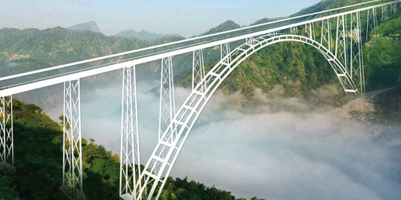
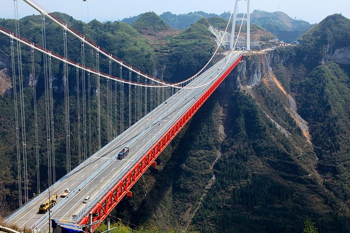
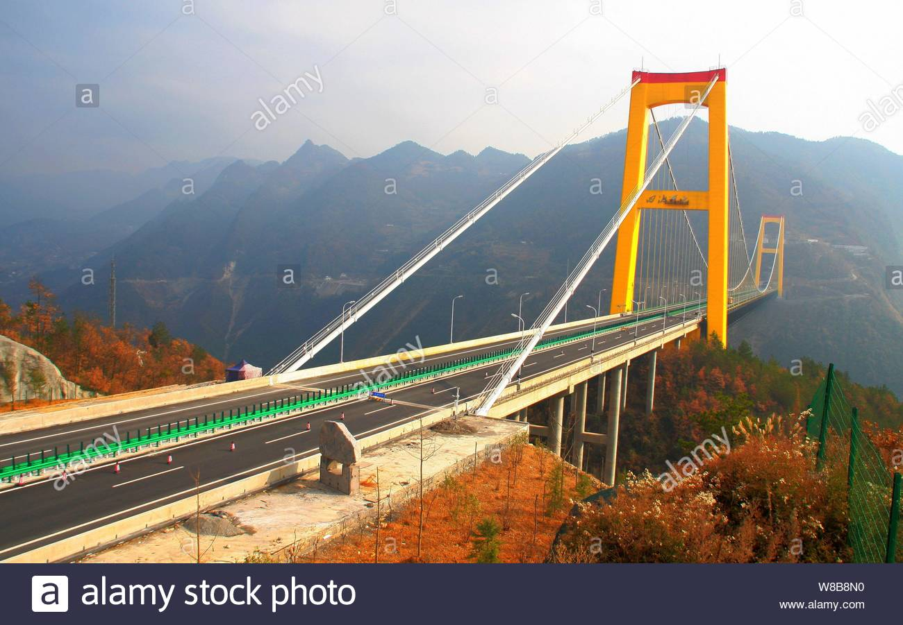

CHENAB RAIL BRIDGE
The Chenab Bridge is an Indian railway steel and concrete arch bridge between Bakkal and Kauri in the Reasi district of Jammu and Kashmir, India.[3][4] When completed, the bridge will span the Chenab River at a height of 359 m (1,178 ft) above the river, making it the world's highest rail bridge.[5][6] In November 2017 the base supports were declared completed allowing for the start of the construction of the main arch.[7] In April 2021 the Chenab Bridge's arch was completed and it is expected to open to rail traffic in December 2022.[2] Key technical data of the bridge include:[8] Deck height (height above river bed): 359 m (1,178 ft), (height above river surface): 322 m (1,056 ft) Bridge length: 1,315 m (4,314 ft), including the 650 m (2,130 ft) long viaduct on the northern side Arch span: 467 m (1,532 ft)[9] Arch length: 480 m (1,570 ft)[10] This makes the Chenab Bridge: The world's highest railway bridge The bridge with the longest span in the 5 ft 6 in (1,676 mm) broad gauge railway network
MILLAU VIADUCT
The Changhua–Kaohsiung Viaduct (Chinese: 彰化－高雄高架橋) is one of the world's longest bridges. The Millau Viaduct (French: Viaduc de Millau, IPA: [vja.dyk də mi.jo]) is a multi-span cable-stayed bridge completed in 2004 across the gorge valley of the Tarn near Millau in Southern France. The design team was led by engineer Michel Virlogeux and English architect Norman Foster.[2][3][4] As of September 2020, it is the tallest bridge in the world, having a structural height of 336.4 metres (1,104 ft).[1] The Millau Viaduct is part of the A75[4]–A71 autoroute axis from Paris to Béziers and Montpellier. The cost of construction was approximately € 394 million ($424 million).[2] It was built over three years, formally inaugurated on 14 December 2004,[1][2] and opened to traffic two days later on 16 December.[5] The bridge has been consistently ranked as one of the greatest engineering achievements of modern times, and received the 2006 Outstanding Structure Award from the International Association for Bridge and Structural Engineering.[6][7][8][9]
AIZHAI BRIDGE
The Aizhai Bridge (Chinese: 矮寨大桥) is a suspension bridge on the G65 Baotou–Maoming Expressway near Jishou, Hunan, China. The bridge was built as part of an expressway from southwest China's Chongqing Municipality to Changsha.[2] The bridge is famous for the spectacular view it offers those crossing it.[3] With a main span of 1,146 metres (3,760 ft) and a deck height of 336 metres (1,102 ft),[4] as of 2013, it is the thirteenth-highest bridge in the world and the world's nineteenth-longest suspension bridge. Of the world's 400 or so highest bridges, none has a main span as long as Aizhai. [5] It is also the world's highest and longest tunnel-to-tunnel bridge.[6] The bridge contains 1888 lights to increase visibility at night.[7] Construction on the Aizhai Bridge began in October 2007 and was completed by the end of 2011, ahead of schedule.[8][9] The bridge was temporarily opened to pedestrians during the 2012 Spring Festival[9] and was formally opened to traffic in March 2012.[10] The bridge was built with the assistance of a $208 million loan from the Asian Development Bank; the total project cost was $610 million, which included 64 kilometres (40 mi) of expressway construction (two thirds of which comprised bridge and tunnel) and upgrades to 129 kilometres (80 mi) of local roads.[11] The bridge and the associated road construction were projected to reduce the travel time between Jishou and Chadong from 4 hours to less than 1 hour.[11][12] In September 2012, the Aizhai Bridge was the site of an international BASE jumping festival that included more than 40 jumpers from 13 countries.[13][14][15]
GOLDEN GATE BRIDGE
The Golden Gate Bridge is a suspension bridge spanning the Golden Gate, the one-mile-wide (1.6 km) strait connecting San Francisco Bay and the Pacific Ocean. The structure links the U.S. city of San Francisco, California—the northern tip of the San Francisco Peninsula—to Marin County, carrying both U.S. Route 101 and California State Route 1 across the strait. The bridge is one of the most internationally recognized symbols of San Francisco and California. It was initially designed by engineer Joseph Strauss in 1917. It has been declared one of the Wonders of the Modern World by the American Society of Civil Engineers.[7] The Frommer's travel guide describes the Golden Gate Bridge as "possibly the most beautiful, certainly the most photographed, bridge in the world."[8][9] At the time of its opening in 1937, it was both the longest and the tallest suspension bridge in the world, with a main span of 4,200 feet (1,280 m) and a total height of 746 feet (227 m).[10]
RUSSKY BRIDGE
The Russky Bridge (Russian: Русский мост, Russian Bridge) is a cable-stayed bridge in Vladivostok, Primorsky Krai, Russia. The bridge connects the Russky Island and the Muravyov-Amursky Peninsula sections of the city across the Eastern Bosphorus strait, and with a central span of 1,104 metres (3,622 feet) it is the longest cable-stayed bridge in the world. The Russky Bridge was originally built to serve the 2012 Asia-Pacific Economic Cooperation conference hosted at the Far Eastern Federal University campus on Russky Island.[2] It was completed in July 2012 and opened by Prime Minister Dmitry Medvedev, and on September 3, 2012, the bridge was officially given its name.[3]
SUTONG BRIDGE
The Sutong Yangtze River Bridge (Chinese: 苏通长江大桥; Wu pronunciation: [sutʰoŋ dadʒɔ], pinyin: Sūtōng Chángjiāng Dàqiáo) is a cable-stayed bridge that spans the Yangtze River in China between Nantong and Changshu, a satellite city of Suzhou, in Jiangsu province. With a span of 1,088 metres (3,570 ft), it was the cable-stayed bridge with the longest main span in the world in 2008-2012. Its two side spans are 300 metres (980 ft) each, and there are also four small cable spans. The bridge received the 2010 Outstanding Civil Engineering Achievement award (OCEA) from the American Society of Civil Engineers.[1][2] Two towers of the bridge are 306 metres (1,004 ft) high and thus the fifth tallest in the world. The total bridge length is 8,206 metres (26,923 ft). Construction began in June 2003, and the bridge was linked up in June 2007. The bridge was opened to traffic on 25 May 2008[3] and was officially opened on 30 June 2008.[4] Construction has been estimated to cost about US$1.7 billion.
YI SUN-SIN BRIDGE
Yi Sun-sin Bridge (Hangul: 이순신대교; Hanja: 李舜臣大橋) is a suspension bridge in the south coast of South Korea. The bridge is one part of The Approach Road to Yeosu Industrial Complex. It is the world's seventh longest suspension bridge in terms of its main span length of 1,545 m since it opened in 2012.[1] The bridge connects Gwangyang with Myodo-dong, a small island that is part of Yeosu City. ‘Yi Sun-sin’ is the name of the Korean Admiral who was born in 1545 and built the world first ironclad warship called 'the Turtle ship' and defended the country against Japanese navy in the Joseon Dynasty. Some people miswrite his last name like 'Lee' instead of 'Yi' but 'Yi Sun-sin' is his official name. The bridge was designed by Yooshin Engineering Corporation[2] and was constructed by Daelim Industrial Company. Unlike the previous suspension bridges in Korea, Daelim's engineers carried out the whole construction engineering by themselves despite its outstanding scale compared with the former ones.[citation needed] The bridge was a finalist in the Outstanding Structure Award 2013.[3]
SAN MARCOS BRIDGE
Completed in 2013, the soaring San Marcos bridge is the largest and tallest bridge on the final Nuevo Necaxa-Tihuatlán section of the México-Tuxpan highway now under construction. Extending from Mexico City to the Gulf of Mexico, the first and last thirds of the 182 mile (293 km) highway were finished in 2005. The difficulty in completing the highway lied in the central Nuevo Necaxa–Ávila Camacho section that runs for 23 miles (37 kms) along the mountainous San Marcos River gorge. To push the modern carretera through the steep terrain, the engineers had to construct 6 tunnels and several high bridges. Three of these spans exceed 100 meters in height including Xicotepec, San Marcos and Texcapa Bridge, which was completed in 2005. Curving 722 feet (220 meters) above the San Marcos River, the giant prestressed concrete beam viaduct has the second highest bridge pier in the world after the Millau Viaduct in France. Rising 682 feet (208 meters) from the top of the foundation to the underside of the beam, pier number 4 is 100 feet (30 meters) higher than those on either the Longtanhe, Akaishi or Kochertal viaducts in China and Germany.
BADONG RIVER BRIDGE
The Badong Yangtze River Bridge is a cable-stayed bridge over the Yangtze River in Badong County, Hubei, China. Completed in July 2004, it carries 4 lanes of traffic on China National Highway 209. [1] The bridge's highest tower measures 218 metres (715 ft) and the bridge has a main span of 388 metres (1,273 ft).[2] The bridge was constructed 147 metres (482 ft) above the original river however the reservoir created by the Three Gorges Dam has increased the height of the water below the bridge and the clearance is vastly reduced.
SIDU RIVER BRIDGE
The bridge is part of the new G50 Huyu Expressway that parallels China National Highway 318, an east-west route between Shanghai and Chongqing,[1] crossing the wide belt of mountains that separate the Sichuan Basin from the lowlands of eastern Hubei. The Yangtze River pierces the same mountain belt 50 km (31 mi) to the north, forming the famous Three Gorges. The Yiwan Railway, completed in 2010 and running parallel to the highway, has been described as China's most difficult to build and most expensive (per km) rail line.[7] The bridge spans a 500-meter-deep (1,600 ft) valley of the Sidu River (a left tributary of the Qingjiang River), and superseded the Royal Gorge Bridge and the Beipan River Guanxing Highway Bridge as the highest bridge in the world until it in turn was surpassed by the Duge Bridge in 2016.
GREAT BELT BRIDGE

The Great Belt Fixed Link (Danish: Storebæltsforbindelsen) is a multi-element fixed link crossing the Great Belt strait between the Danish islands of Zealand and Funen. It consists of a road suspension bridge and a railway tunnel between Zealand and the small island Sprogø in the middle of the Great Belt, and a box-girder bridge for both road and rail traffic between Sprogø and Funen. The total length is 18 kilometres (11 mi).[2] The "Great Belt Bridge" (Danish: Storebæltsbroen) commonly refers to the suspension bridge, although it may also be used to mean the box-girder bridge or the link in its entirety. Officially named the East Bridge, the suspension bridge was designed by the Danish firms COWI and Ramboll, and the architecture firm Dissing+Weitling. It has the world's fifth-longest main span (1.6 km (1 mi)), and the longest outside Asia. At the time of the opening of the bridge it was the second longest, beaten by the Akashi Kaikyō Bridge opened a few months previously.